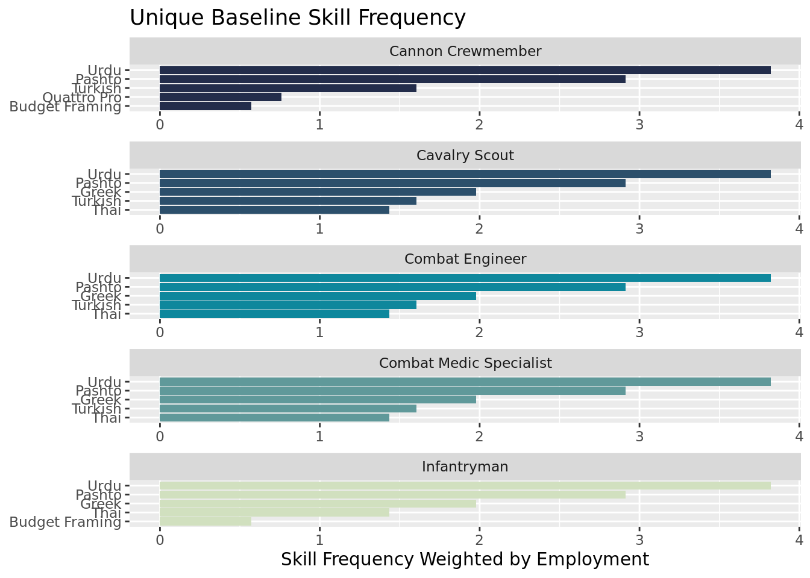

Baseline Skills
The first piece of our analysis begins with learning about baseline skills. This was a definition from Burning Glass and includes soft and more generalized skills for the workplace. These skills are seen across most SOC and MOS codes because of how general they are. However, these are highly employable skills and therefore important to Veterans for their resumes.
Exploratory Data Analysis
Within baseline skills, Army personnel have opportunities to fill an average of 185,900 jobs within each SOC code. They have an opportunty to earn an average of 51,000 dollars in these same jobs. This is an average across 170 jobs, therefore there is room for upwards of 31 million veterans to earn jobs in these fields, if they only served veteran groups.
| Statistic | N | Mean | St. Dev. | Min | Pctl(25) | Pctl(75) | Max |
| Employment | 170 | 185,950.900 | 431,133.200 | 160 | 20,342.5 | 146,895 | 4,317,950 |
| Salary | 170 | 51,009.410 | 15,686.110 | 25,510 | 39,335 | 59,167.5 | 120,140 |
Skill Frequency
The most common baseline skills acrued in the Army are highly employable and salient skills. Thse include communication, organization, detail-orientation, problem solving, and excel. These skills are common to the Army and civilian jobs and should be included on resumes by veterans to highlight how translatable their skills are from the Army to civilian life.

Unique Skills
We define unique skills as those not present in all 10 MOS's. Across thesse 10, the most unique are types of languages learned. Tis signals that language acquisititon is the most unique of skill traits to come out of Army jobs. This inherently mamkes sense. In the Army you'll learn lots of similar baseline skills like communication, physical skills, and discipline, but langauges are more tuned to which specific job you may do.


Networks

Alt text